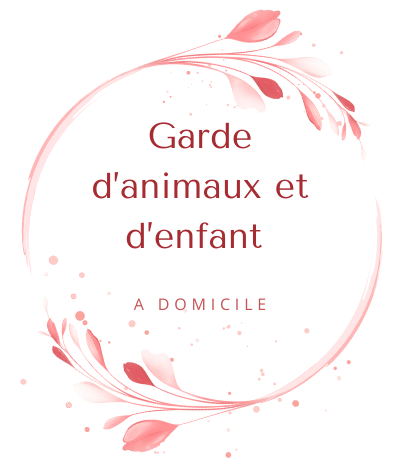

Je suis passionnée par la garde d'enfants et d'animaux. Votre tranquillité d'esprit est ma priorité.
Je m'appelle Zoé et je souhaite proposer mes services de garde d'enfants et d'animaux ainsi que pour le ménage et l'entretien des jardins. J'ai toujours eu une passion pour le bien-être des enfants et des animaux, et je trouve une grande satisfaction à m'occuper d'eux. De plus j'ai un fort intérêt pour maintenir des espaces propres et bien rangés, ainsi que pour le travail en exterieur. J'ai pour objectif de vous aider avec vos enfants, vos animaux et vos plantes et par la même occasion mettre un peu d'argent de côté pour mes études.
Je suis responsable, fiable et motivée, Je serai ravie de pouvoir vous aidez en prenant soin de vos enfants, vos animaux, de vos plantes, et de votre maison. J'éspère que vous me ferez confiance.
Pour les enfants, j'aime créer un environnement sûr, amusant et éducatif où ils peuvent s'épanouir. J'ai de l'expérience en tant que baby-sitter et je suis capable de gérer différentes trnaches d'âge avec patience et attention. Je suis également capable d'aider avec les devoirs, de proposer des activités créatives...
Tarif : 10€/h
Pour les animaux, j'ai grandi entouré d'animaux de compagnie (ancienne famille d'acceuil pour chat) et je comprends l'importance de leur offrir des sois attentif et affecteux. Que ce soit pour des promenade, des séances de jeu, ou simplement pour leur tenir compagnie, je m'assure toujours que les animaux se sentent aimés et en sécurité.
Tarif : 5€/h ou 5€/sortie
Pour le ménage je suis méticuleuse et organisée. J'aime voir un espace transformé après un bon nettoyage. Que ce soit pour le nettoyage quotidien, le rangement ou des tâches plus spécifiques, je suis prète à m'investir pour que votre maison soit un lieu agréable à vivre.
Tarif : variable selon la quantité de travail à fournir
Pour le jardin, j'ai une véritable passion pour la nature et le trvail en pleine air. J'ai de l'expérience dans l'entretien des jardins, que ce soit dans la tonte de pelouse,l'arrosage des plantes, la plantation de fleurs ou encore des potagers. J'aime voir un jardin vivre grâce à des soins attentif et régulier.
Tarif : variable selon la quantité de travail à fournir
Pour plus d'informations ou pour réserver mes services, veuillez me contacter à l'aide des moyens suivants :
Email : despinszoe@gmail.com
Numéro : 06.26.06.24.56